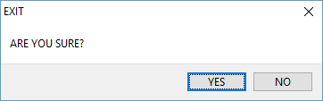

ssk.android.*
This library contains a few helper functions to handle common Android issues/tasks.
| captureBackButton | captureVolumeButtons | easyAndroidUIVisibility |
captureBackButton
Capture the back button on Android devices and prompt the user to be sure they really want to leave the app.
When user presses back button they are prompted with a pop-up dialog:

ssk.android.captureBackButton( [ noCB, [ yesCB ] ] )
noCB- Optional function to execute if the user selects "NO".yesCB- Optional function to execute if the user selects "YES".
local onNo()
print("Pressed No")
end
local onYes()
print("Pressed Yes")
end
ssk.android.captureBackButton( onNo, onYes )
captureVolumeButtons
Capture the volume buttons on Android and do something when they are pressed.
ssk.android.captureVolumeButtons( [ block, [ volUp, [ volDown ] ] ] )
block(true) - Iftrueblock the volume change action.volUp- Optional function to execute if the user selects "volUp".volDown- Optional function to execute if the user selects "volDown".
local upUp()
print("Use tried to increase volume")
end
local onDown()
print("Use tried to decrease volume")
end
ssk.android.captureBackButton( true, onUp, onDown )
easyAndroidUIVisibility
Easily hide Android virtual buttons (back, home, ... ).
ssk.android.easyAndroidUIVisibility( [ profile ] ] )
profile("immersiveSticky") - Style of visibility selection:"immersiveSticky"- Cause the status and navigation bars to disappear.- If the user swipes from the top or bottom, they will reappear and then disappear again.
- Only on Android KitKat (Api 19) or above.
"immersive"- Cause the status and navigation bars to disappear.- If the user swipes from the top or bottom, they will reappear and stay.
- WARNING: A resize event will be triggered and the objects on the screen will need to be manually re-rendered. This is because the content scaling for the device changes and the objects will not have the correct aspect ratio unless they are re-rendered (removed and restored).
- Only on Android KitKat (Api 19) or above.
- If the user swipes from the top or bottom, they will reappear and stay.
"lowProfile"- Dims the navigation bar icons.- Only on Android Ice Cream Sandwich (Api 14) or above.
"default"- Resets the value.
-- Automatically use 'immersiveSticky' if available.
ssk.android.easyAndroidUIVisibility( nil )
 Copyright © Roaming Gamer, LLC. 2008-2016; All Rights Reserved
Copyright © Roaming Gamer, LLC. 2008-2016; All Rights Reserved